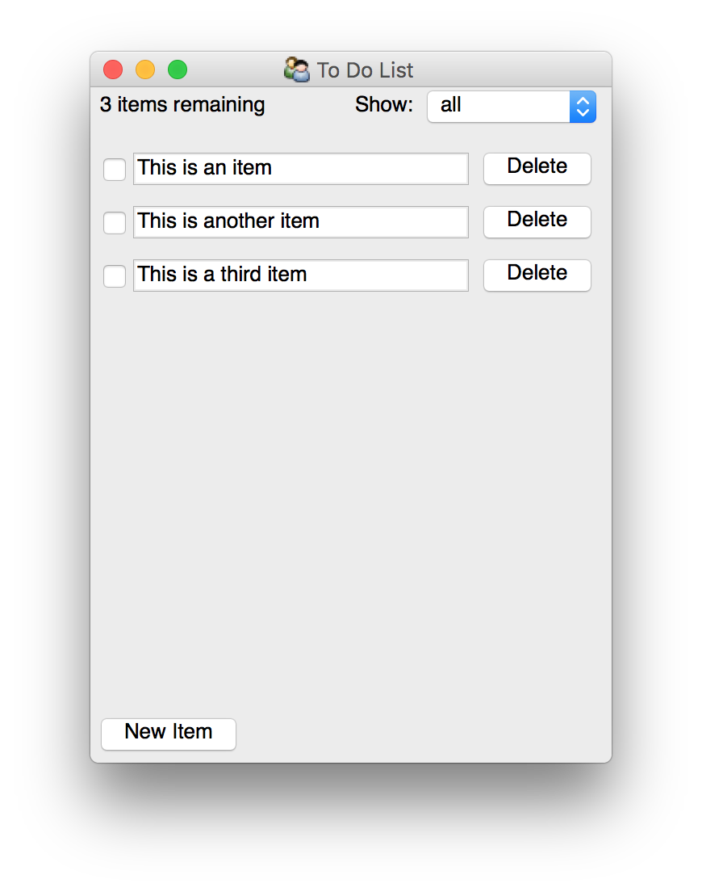

To-do List Application¶
{kind=link}
To-do List¶
This is a very simple Traits and TraitsUI application that provides a to-do list and a GUI that goes with it. This example demonstrates:
- a Traits model for “business logic”.
- using TraitsUI with a Model-View-ViewModel architecture.
- TraitsUI handlers.
- simple TraitsUI Action usage.
While complete, it doesn’t provide any means of loading or saving data, and isn’t intended for “real-world” use.
Installation¶
You can create an appropriate environment with the following EDM commands:
edm install -e todo-list traitsui pyqt
edm run -e todo-list pip install .
and you can switch into that environment with:
edm shell -e todo-list
If you prefer to use pip, you can install into an existing environment
with:
pip install .[pyqt]
Usage¶
Once installed in an active environment, the application ise run via the
todo-list command. Initial to-do items can be specified via one or more
--todo commandline arguments, eg.:
todo-list --todo "first thing" --todo "second thing"
Design Notes¶
The application is built around the standard Model-View-ViewModel architecture.
The model consists of two classes, one for each list item and one for the list
as a whole, and is found in todo_list.model. The views and
modelviews are found in the todo_list.view module, and match the
model structure, having one view and one modelview each for the list items and
list as a whole.
The main application entrypoint is in the todo_list.app module which
does basic argument parsing to set up the model, and then calls
configure_traits() on the modelview.
License¶
This software is provided without warranty under the terms of the BSD license included in LICENSE.txt and may be redistributed only under the conditions described in the aforementioned license. The license is also available online at http://www.enthought.com/licenses/BSD.txt
To-do List Documentation¶
Module todo_list.app: Application Main¶
This module provides the application infrastructure to run the to-do list application. It parses command-line arguments into to do items and starts the TraitsUI application.
Module todo_list.model : To-Do List Model Classes¶
This module provides two classes that together provide the business logic for a simple to-do list application.
-
class
ToDoItem[source]¶ A task in a to-do list.
A to-do item has a description and a completed flag as its state.
-
completed= None¶ Whether or no the task has been completed.
-
description= None¶ The description of the task.
-
-
class
ToDoList[source]¶ A list of tasks that need to be done.
This provides a list of
ToDoIteminstances, as well as a list of the remaining items and the count of the remaining items.Notes
This demonstrates both using
on_trait_change()and TraitsPropertyhandlers to handle re-computation based on updates for pedagogical reasons.-
items= None¶ The list of tasks that we want to perform.
-
remaining= None¶ The number of remaining items.
-
remaining_items= None¶ The list of items that still need to be completed.
-
Module todo_list.view : To-Do List UI Classes¶
This module provides the UI classes that provide the UI logic and views for a simple to-do list application. This is a fairly simple UI, with each item displayed in a list editor, and a toggle to allow the user to switch between seeing all items or just the remaining items. This also shows a basic action which is available as a menu item and a button.
-
to_do_item_view= TraitsUI View instance¶
-
todo_list_view= TraitsUI View instance¶
-
class
ToDoItemController(model=None, **metadata)[source]¶ A controller for list items in the view
We need this to add a ‘delete’ button to the view, which we can’t do from the item by itself.
-
delete= None¶ A button to trigger removal.
-
model= None¶ The item being displayed
-
todo_list= None¶ The todo list being displayed in the larger view
-
-
class
ToDoListModelView(model=None, **metadata)[source]¶ A ModelView for the ToDoList
This ModelView allows the user to switch the view between the list of all items and the list of remaining items, as well as add new items.
-
display_selection= None¶ Whether we want to see all items, or just the remaining items.
-
displayed_items= None¶ The list of items that we are actually viewing.
-
model= None¶ The todo list that we are using as the model.
-
new_item(ui_info)[source]¶ Handle an “New Item” action.
This simply adds a new, empty item to the model’s items.
-
remaining= None¶ A human-friendly string reporting the number of items remaining
-
Exercises¶
If you are learning how to work with Traits and TraitsUI, working through these exercises may be illuminating.
Extend the
todo_list.model.ToDoItemclass to include an optional due date. The default value of the due date should be a week from the current day.Hint: The
Datetrait is useful here.Extend the
todo_list.model.ToDoListclass to additionally provide a property containing the list of all overdue items, that is items which are not complete and which have a due date before the current due date.Extend the user interface to expose the due date and overdue items in a user-friendly manner. You should allow the user to:
- toggle whether or not any given item has a due date and allow them to set
it if there is one in the
todo_list.view.ToDoItemControllerclass, - select whether they want to view all the items, the remaining items, or just the overdue items, and whether the items should be sorted by due date or not.
- toggle whether or not any given item has a due date and allow them to set
it if there is one in the